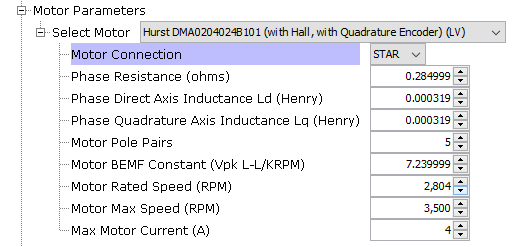

Project graph:
To get the PMSM_FOC motor control library working, add the PMSM_FOC component in the project graph.
Connect to the dependent PLIBs (ADC, PWM, QDEC) and X2CScope module.
Note: ADC and PWM PLIB names are different across different device families.

PMSM_FOC library configurations are divided in below sections.
- Control Algorithm Parameters:
Allows to select application mode like open loop or speed loop or torque loop.
Position feedback determines the feedback loop implementation like PLL estimator sensorless or Encoder based sensored algorithm.

This allows to configure startup parameters and control loop PI parameters.

- PWM Configurations:
Select the PWM frequency and PWM channels used to drive Phase U, V and W based on board connections. Selected configurations are passed to the PWM PLIB. PWM PLIB is auto-configured for FOC algorithm.

- ADC Configurations:
Select ADC channels used for Phase U current, Phase V Current, DC Bus voltage and potentiometer based on the board connections. Selected configurations are passed to the ADC PLIB. ADC PLIB is auto-configured for FOC algorithm.

- Encoder Configurations:
Select the number of encoder pulses per revolution of the motor. Selected configurations are passed to the QDEC PLIB.

- Motor Parameters:
Allows to configure motor parameters. Microchip direct motors are selectable and pre-configured. User can select custom motor to configure parameters for other motors.

- Control Board Parameters:
Allows to configure control board parameters. Microchip's motor control development boards like dsPICDEM MCLV-2 development board are selectable and pre-configured. User can select custom board to configure parameters for other boards.

- I/O Pin Configurations:
Configure I/O pins for PWM, ADC, Encoder, UART, input switches and LEDs using the pin manager.
- Clock Configurations:
CPU clock speed is defaulted to maximum recommended clock frequency of the MCU. View or modify the clock speed using clock manager.
|
Microchip 32-bit Motor Control
|